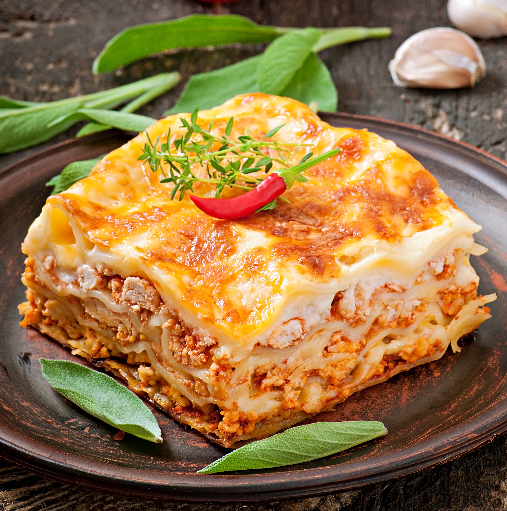

Home
Lasagna recipe

Lasagna is a classic Italian baked dish consisting of stacked, alternating layers of broad,
flat or ruffled pasta sheets, savory sauces (typically ragù and béchamel), and various cheeses, most commonly mozzarella, ricotta, and Parmesan
Key Components & Variations:
- Pasta: Often, wide, flat pasta sheets are used, but sometimes ruffled noodles are featured.
- Sauces: Authentic Bolognese features a meat ragù and creamy béchamel, while other variations use tomato sauce or pesto (Genovese).
- Cheese: Ricotta, mozzarella, and Parmesan are the standard cheeses used for creamy, gooey layers.
- Fillings: Common additions include ground beef, sausage, pork, onions, celery, and carrots.
- Regional Styles: Southern Italian versions may include small meatballs and hard-boiled eggs, while northern versions, like vincisgrassi from Marche, may include chicken livers or sweetbreads
Here is the step-by-step process for making a classic lasagna:
- Prep the Sauce: Brown ground meat with onions and garlic, then stir in crushed tomatoes and Italian herbs. Simmer for 20 minutes.
- Prep the Cheese: In a small bowl, mix ricotta cheese with one egg, salt, and parsley.
- Cook the Pasta: Boil lasagna noodles until al dente, then drain and lay them flat so they don't stick together.
- Bottom Layer: Spread a thin layer of meat sauce on the bottom of a 9x13 baking dish to prevent sticking.
- Layer the Noodles: Place a single layer of noodles over the sauce.
- Add the Fillings: Spread a layer of the ricotta mixture over the noodles, followed by a layer of meat sauce and a sprinkle of mozzarella.
- Repeat: Continue layering (Noodles, Ricotta, Meat, Mozzarella) until the dish is full, usually 3–4 layers deep.
- Top Layer: Finish with a final layer of noodles topped with meat sauce, mozzarella, and a heavy dusting of Parmesan.
- Bake: Cover with foil and bake at 375°F (190°C) for 30 minutes. Remove the foil and bake for another 15 minutes until the cheese is bubbly and brown.
- Rest: Let the lasagna sit for 15 minutes before cutting so the layers stay together